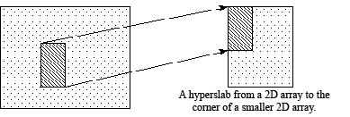
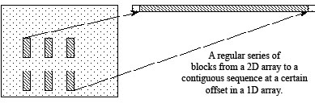
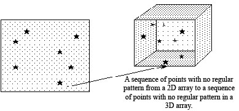
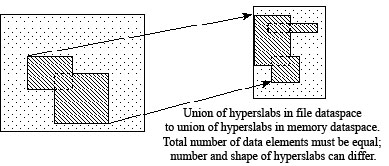
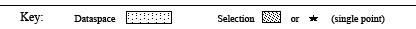

Not a Chapter
Selected/Archived Passages
These passages are saved in case they prove useful in contexts other than from whence they came.
For the "Mapping Memory <--> Storage" discussion
Several sample cases of selection reading/writing are shown in Figure 18.
File dataspace
and selection
Memory dataspace
and selection





Figure 18: Mappings between file dataspaces and selections and memory dataspaces and selections
For the "_______________________________" discussion
For the "_______________________________" discussion